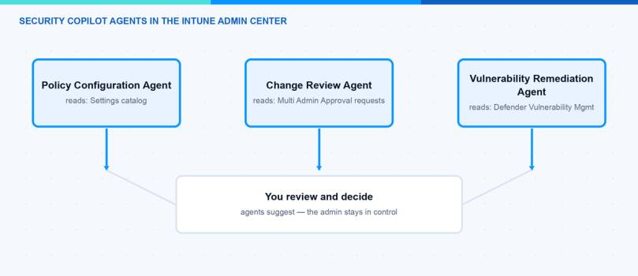
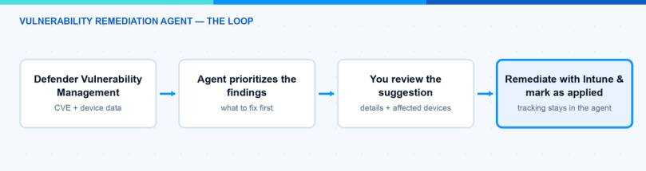

Microsoft is bringing AI agents into more and more admin portals. In this blog post I explain the Security Copilot agents in Intune: the Policy Configuration Agent, the Change Review Agent, and the new Vulnerability Remediation Agent. I show what each agent actually does, how you can enable them, and what you should watch out for. I also cover an important licensing change: Microsoft 365 E5 and E7 tenants get Security Copilot capacity included at no additional cost.
What Are Security Copilot Agents in Intune?
Security Copilot agents in Intune are AI-powered assistants that run directly inside the Microsoft Intune admin center. They are built on Microsoft Security Copilot. The idea is simple: an agent observes data in your tenant, reasons about it, and gives you suggestions. You as the admin review the suggestions and decide what happens. The agents do not apply changes on their own. Each agent is built for one specific use case and works within Intune role-based access control (RBAC). You find them all under the Agents node in the admin center. The full list of Security Copilot agents in Intune is documented on Microsoft Learn.
Which Agents Are Available in Intune?
In 2026 there are three Security Copilot agents in Intune that matter for daily work. Here is my short overview:
| Agent | What it does | Status | When I use it |
|---|---|---|---|
| Policy Configuration Agent | Turns documents or plain-language requirements into a settings catalog policy | Available | When I build a baseline from CIS, STIG, NIST, or internal security documents |
| Change Review Agent | Evaluates Multi Admin Approval requests for PowerShell scripts and recommends approve, reject, or needs more info | Public preview | As a second opinion before I approve a script request |
| Vulnerability Remediation Agent | Prioritizes CVEs from Microsoft Defender Vulnerability Management and gives step-by-step Intune remediation guidance | Public preview (for all customers since June 2026) | For my regular vulnerability triage on Windows clients |
Note: There was also a Device Offboarding Agent. Microsoft retired it. New setup ended on April 30, 2026, and the agent was removed from the admin center on June 1, 2026. Move existing offboarding workflows back to the normal device lifecycle options in Intune.

What Does the Policy Configuration Agent Do?
With the Policy Configuration Agent you upload a document or write your requirements in plain language, for example “All laptops must have BitLocker enabled with AES-256 encryption”. The agent parses the text, finds the matching settings in the Intune settings catalog, and recommends values for them. You review the suggestions, remove what you do not want, and then let the agent create the policy. The agent also lists requirements it could not map to a setting, so you see the gaps and can document how you handle them. The result is a normal settings catalog policy. It is not enforced until you assign it yourself. Windows is the supported platform, and only one agent instance per tenant is supported. In my view this is the most useful of the Security Copilot agents in Intune when you get a hardening document from your security team and need to turn it into a real policy.
What Does the Change Review Agent Do?
The Change Review Agent looks at Multi Admin Approval requests for PowerShell scripts on Windows devices. It aggregates signals from Microsoft Defender Vulnerability Management, Microsoft Entra ID identity risk, and the historical context in Intune. For each request it recommends one of three actions: approve, reject, or needs more info, together with the rationale and what the script is intended to do. It reviews a maximum of 10 requests per run, and the final decision always stays with you. A nice detail: after a run, the My requests and All requests pages under Tenant administration > Multi Admin Approval show an Agent Response column for script requests, so you can open the suggestion right where you approve. If Multi Admin Approval is new for you: I wrote about the recent MAA enforcement on Graph API calls in my last blog post. I would use the agent as a fast risk summary, but I would still read the script myself before I approve it.
The Vulnerability Remediation Agent is the newest of the Security Copilot agents in Intune. Since June 2026 it is in public preview for all customers — before that it was a limited preview for a small group. It uses data from Microsoft Defender Vulnerability Management to identify CVEs on your managed Windows devices and apps in Intune. The agent prioritizes the findings based on CVSS scores, exposure impact, and device count. For each suggestion you see the affected CVEs, a summarized impact analysis, the exposed devices, and step-by-step guidance for how to remediate the issue with Intune. After you remediate something, you can mark the suggestion as applied so the agent keeps a record over time.
One technical difference: this agent runs under a Microsoft Entra agentic identity instead of your admin account. During setup, Intune provisions an agentic user in your Entra directory, and the agent runs with exactly the permissions you delegate to this user. This fits nicely into the topic of my post about how to protect AI agents with Microsoft Defender for Endpoint.
Note: The CVE counts and the exposed device list only cover Windows client editions. Windows Server devices are not included.

How Can I Enable the Agents?
To use the Security Copilot agents in Intune, you need Security Copilot enabled in your tenant with security compute units (SCUs) available, plus a Microsoft Intune Plan 1 subscription. The Change Review Agent also needs Microsoft Entra ID P2 and Microsoft Defender Vulnerability Management. The Vulnerability Remediation Agent needs Defender Vulnerability Management as well, which comes with Defender for Endpoint Plan 2 or the standalone license. All three agents are supported in the public cloud only, not in the government clouds. The setup itself is quick:
- Sign in to the Microsoft Intune admin center (intune.microsoft.com) with the least privileged role for the agent.
- Go to Agents and select the agent you want, for example Policy Configuration Agent.
- In Overview, select Set up agent. The pane shows the required permissions and plugins.
- Select Start agent to run it for the first time.
For the Vulnerability Remediation Agent there are two extra steps. After setup you must delegate the required permissions to the agentic user — an Intune read-only role in the Intune admin center and a Security Reader equivalent in the Defender portal. Agent runs stay disabled until this is done. Then use the Run Readiness Check button on the agent page to verify everything is in place; once the check passes, the Run button and scheduling become available.
Hint: You can reach the Vulnerability Remediation Agent from both the Agents node and the Endpoint security node. It is the same agent behind both paths.
What About Licensing and SCU Costs?
This is the part many admins missed. The Security Copilot agents in Intune consume security compute units every time they run. Until now that meant provisioning and paying for SCUs separately. At Ignite 2025 Microsoft announced that Security Copilot is included for all Microsoft 365 E5 and E7 customers. The rollout started on November 18, 2025 for existing Security Copilot customers and continues in phases for all eligible tenants — check the Message center and the banners in the admin portals to see when your tenant is enabled.
The included capacity: 400 SCUs per month for every 1,000 paid user licenses, up to 10,000 SCUs per month. It scales down for smaller tenants too — with 400 user licenses you get 160 SCUs per month. The capacity is provisioned automatically as a “Default Security Copilot Capacity”, with zero-click activation and no Azure setup. Details are on Microsoft Learn.
Three honest notes on this:
- Unused SCUs do not roll over to the next month.
- If you exceed the included SCUs, Microsoft plans to throttle usage at a future date, with an option to buy more at 6 USD per SCU pay-as-you-go. You get 30 days notice before that starts.
- The inclusion covers the SCUs, not the prerequisites. Licenses like Defender for Endpoint Plan 2 (outside E5) or Entra ID P2 still need to be in place for the agents that require them.
What Should I Watch Out For?
A few honest points from my side about the Security Copilot agents in Intune:
- Review before you apply. All output is a suggestion. Check the recommended settings, read the script, and validate the remediation steps before you act.
- RBAC and identity. The agents run with the permissions of the setup account or the agentic user. Keep this least privileged. Also note: in the current preview, Vulnerability Remediation Agent suggestions can be visible to admins outside their assigned scope, and the agent does not support scope tags yet.
- SCU consumption. Every run costs SCUs. With the E5 and E7 inclusion this is less painful, but monitor your usage in the Security Copilot usage dashboard, especially with scheduled runs.
- No pause button. Once you start a run, you cannot stop or pause it.
- Authentication expiry. For the agents that run under an admin identity (Policy Configuration and Change Review), the authentication expires if the agent does not run for 90 days. Intune shows a renewal banner on the agent page — select Renew authentication there. Vulnerability Remediation Agent instances that were set up with a human identity before the agentic identity release must be switched to an agentic identity; the old tokens expire 90 days after the release.
In this blog post I showed you the three Security Copilot agents in Intune, what they do, how to enable them, and where the limits are. My recommendation: start with the Policy Configuration Agent, because the review workflow is easy to control, and then test the Vulnerability Remediation Agent in the preview. I hope this is a little help.
Stay healthy, Cheers Jannik